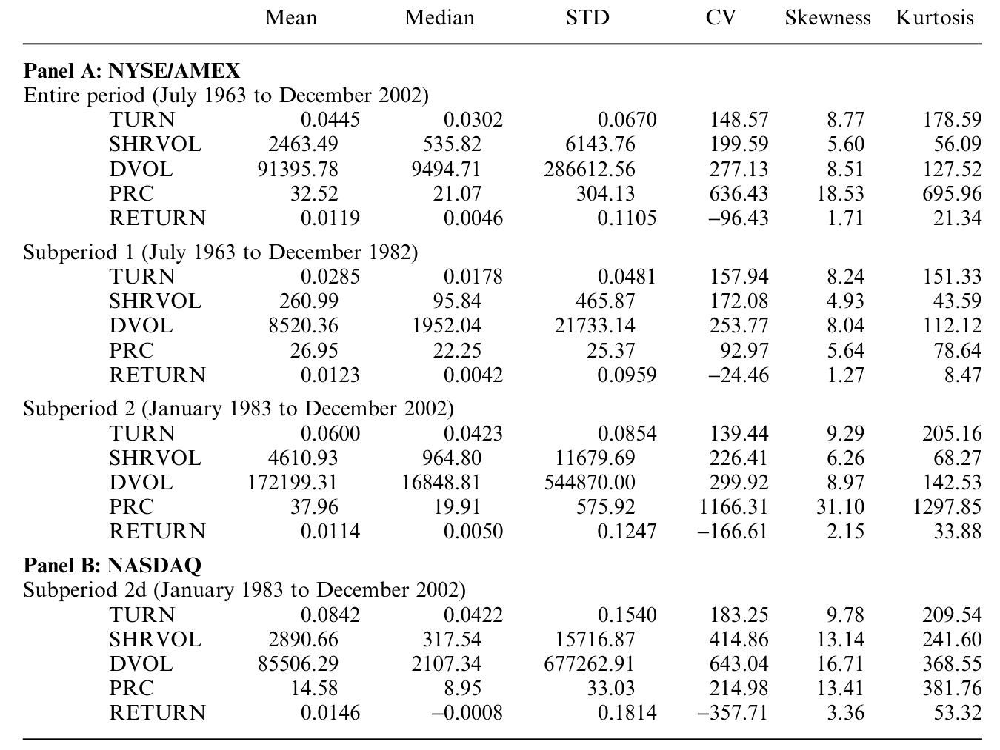
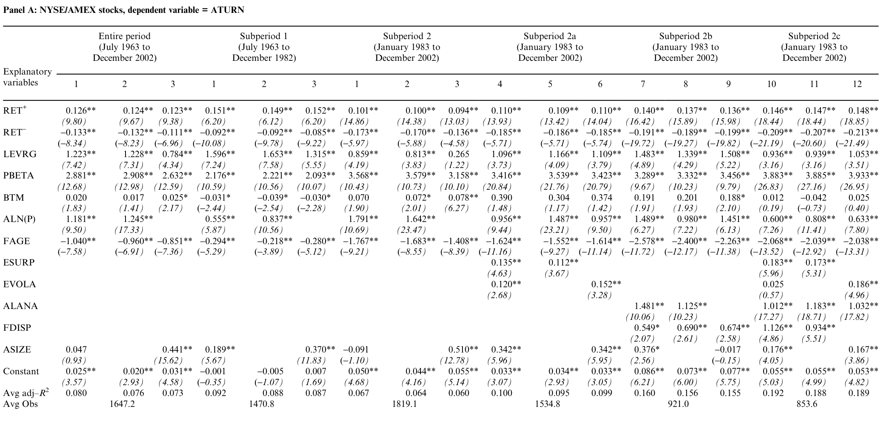
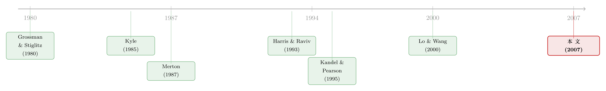

为什么有的股票「天天换手」，有的却「躺平」不动？
本文读的是 Chordia, Huh & Subrahmanyam (2007, Review of Financial Studies)：它第一次系统地回答了「为什么不同股票的交易活跃度差这么多」。作者把交易量拆成三股力量——为提高「可见度」而来的流动性交易、知情者的多寡、以及对基本价值的「分歧与不确定」——并用近 40 年、横跨纽交所/AMEX 与纳斯达克的数据做横截面预测回归。最反直觉的一个结论是：看上去最该「带量」的变量——分析师人数——在控制住其他特征后，并不直接推高换手率。
1 一个被冷落了几十年的问题
金融学有一个长久的偏心。我们花了几代人的精力去解释价格：CAPM、三因子、动量、价值……一篇又一篇论文追问「预期收益由什么决定」。可是市场里另一半同样真实的东西——交易本身——却长期只是配角。
但交易并不小。作者在开篇就甩出一个数字：2003 年纽交所的年换手率约 99%，成交量约 3500 亿股；按每股 $20、来回 50 个基点的交易成本算，那一年投资大众为「换手」这件事付出了大约 $175 亿美元。这不是边角料，这是一个产业。
更要命的是，交易活跃度在个股之间的差异大得惊人。作者举了一个让人过目不忘的例子：2001 年，International Rectifier 的年换手率是 International Minerals and Chemicals Global 的八倍还多——可这两家纽交所公司的市值，相差还不到 1%。
同样的「身材」，八倍的「活跃度」。如果市值几乎一样，那到底是什么，让一只股票被反复买卖，让另一只静静躺着？
这就是全文要追的那个核心问题：换手率的横截面，是由什么决定的？ 在此之前，关于交易量的文献已经汗牛充栋——但它们大多是时间序列的故事（量与绝对价格变化正相关、开盘量大、周一量小、日内 U 型……）。Lo and Wang (2000) 做过横截面，但只用了一小撮同期变量、还把数据按五年区间做了聚合。这篇文章的野心不一样：它要跑的是预测性的横截面回归，用一大批滞后的解释变量，去预测下个月的换手率，而且纽交所/AMEX 与纳斯达克分开做。
这是第一篇全面盘点交易活跃度横截面决定因素的论文。
2 把「交易」拆成三股力量
要解释交易，先得问：人为什么交易？作者把理论文献梳理成三条线，再把每条线翻译成可观测的代理变量。这是全文的骨架，值得慢慢看。
第一股力量：流动性（噪声）交易，而它由「可见度」与「再平衡需求」驱动。 投资者会因为组合再平衡而买卖，这是一种不含信息的流动性交易。但关键的一步在于 Merton (1987) 的洞见：个人投资者的注意力是稀缺的，他们只盯着一小撮最显眼的股票。于是流动性需求虽然遍布全市场，真正落地成交易的，主要集中在那些「可见度」高的股票上。作者用四个变量来度量可见度：
- 公司规模
ASIZE = log(MV)（月末市值的对数）； - 公司年龄
FAGE = log(1+M)，M 是上市以来的月数——新公司在 IPO 期间万众瞩目，容易带量； - 账面市值比 (book-to-market, BTM)——低 BTM 是成长股（如科技股），更扎眼；
- 价格水平
ALN(P) = log(PRC)。Brennan and Hughes (1991) 指出，券商佣金与每股价格成反比，所以券商更卖力地吆喝低价股；Falkenstein (1996) 又发现共同基金厌恶低价股。
第二股力量：知情者的多寡。 知情交易者越多，市场里被「翻动」的信息就越多。作者沿用 Brennan and Subrahmanyam (1995) 的做法，用分析师人数 ALANA = log(1+ANA)（向 I/B/E/S 报送预测的分析师数）来代理知情者的质量。记住这个变量——它后面会上演全文最大的反转。
第三股力量：分歧与不确定。 这一股其实又分两层。一层是「意见分歧」(differences of opinion)：Harris and Raviv (1993)、Kandel and Pearson (1995) 这一脉认为，投资者看同一份公开信息却解读不同，于是产生交易。作者用分析师预测离散度 FDISP（多名分析师 EPS 预测的标准差）和杠杆 LEVRG（账面负债/总资产）来代理——杠杆高的公司风险更大，分歧也更大。另一层是「估值不确定」(estimation uncertainty)：当人们对基本价值还在学习、还会犯错，新信息一来就会触发纠错性的交易。作者用盈余波动 EVOLA（最近八个季度盈余的标准差）、盈余意外 ESURP（最近一季盈余与四个季度前之差的绝对值）以及 beta 来代理。
为什么 beta 也算进「不确定」这一档？这里有个不太被人注意的论点。Coles and Loewenstein (1988) 等人论证，估值风险是不可分散的，信息越少、估值不确定越高的证券，均衡 beta 越高。于是「高 beta」就成了「高估值不确定」的一个侧影；不确定大 → 纠错多 → 换手高。beta 用 Fama–French 式的组合后排序 beta（PBETA）来减小测量误差，其个股版本由这个再熟悉不过的时间序列回归估出：
$$R_i - R_f = \alpha_i + \beta_i [R_m - R_f] + \varepsilon_i$$
这里 R_i、R_f、R_m 分别是个股收益、无风险利率、CRSP 市值加权指数收益。
把这三股力量记成一句话：谁被看见（可见度）、谁在搅动（知情者）、谁在争吵（分歧与不确定）。 全文剩下的事，就是看哪股力量在数据里真的「带量」。
值得一提的是过去收益。作者特意把月度收益拆成 RET+（为正时取该值，否则为零）和 RET−（为负时取该值，否则为零）——因为卖空约束和处置效应 (disposition effect) 会让「涨」和「跌」对买卖的影响不对称。这一拆，后面拆出了全文最干净的一个发现。
3 数据与方法：近 40 年的一张大网
样本是月频、474 个月，从 1963 年 7 月到 2002 年 12 月，跨度 39.5 年。作者把全期切成两段：第一段 1963 年 7 月至 1982 年 12 月（234 个月），第二段 1983 年 1 月至 2002 年 12 月（240 个月）——因为 1980 年代以来美国股市发生了一连串结构性变化（共同基金业的扩张、指数期货的引入等）。由于纳斯达克众所周知的「双重计数」问题（Atkins and Dyl, 1997），纽交所/AMEX（「交易所市场」）与纳斯达克（「OTC 市场」）始终分开处理。
方法是经典的 Fama–MacBeth (1973)：每个月跑一次横截面回归，把当月换手率回归到上一期的那一大堆解释变量上；再把逐月得到的系数在时间序列上取平均，并用 Newey–West 调整标准误。换言之，这是一组预测回归——作者刻意不放入同期收益，因为目标是找「能提前预告交易活跃度」的横截面变量。
先看描述性统计。这张表把交易活跃度的三种度量（换手率 TURN、对数股数 LN(SHRVOL)、对数美元成交额 LN(DVOL)）的均值、中位数、标准差都摊开来。

Table 1: summarizes the time-series average values of monthly means
几个数字很有意思。全期平均月换手率 4.45%，但两段之间天差地别：第二段 6.00% 是第一段 2.85% 的两倍多。换手率从 1963 年 7 月的区区 1.54% 一路爬到 2002 年 7 月的历史高位 11.74%，中途在 1987 年 10 月触及 9.25% 后随股灾回落、再继续上行。纳斯达克更夸张：2000 年 2 月的换手率（27.07%）是同期交易所市场（8.69%）的三倍——这里头当然有双重计数的水分，但「OTC 比交易所活跃得多」是确凿的（可比口径下 Nasdaq 8.42% vs 交易所 6.00%）。
作者也坦白了一个技术隐患：有些序列本身是非平稳的（最明显的就是价格水平），这会让 Fama–MacBeth 那种「横截面系数的时间序列平均」不一定收敛到总体真值。这是后面要替他记下的一笔账。
4 反转：最该「带量」的那个变量，其实不带量
现在到了全文最关键、也最值得玩味的地方。
先说哪些力量被数据证实了。 总体而言，三股力量都拿到了支持：可见度、再平衡需求、意见分歧、估值不确定，逐一在换手率上留下了印记。其中三条尤其清楚——
第一，过去收益越极端，下个月换手越高，而且涨跌都算数。RET+ 越大、RET− 越负，都会大幅抬高交易活跃度。换句话说，不论涨得猛还是跌得狠，都会带来更多买卖。这与组合再平衡、正反馈交易/处置效应的图景一致——Hong and Stein (1999)、Odean (1998)、Ströbl (2003) 都预言过这种「追涨杀跌带量」。（关于「股票涨了人就更想交易」这条跨国证据，可参见《股票涨了，他们为什么更想交易？——46 国市场里的一条「追涨」暗线》。）
第二，分析师预测离散度 FDISP 与换手率正相关：意见越分歧，交易越活跃——为 Harris–Raviv、Kandel–Pearson 那条「分歧生交易」的理论提供了直接证据。
第三，beta、ESURP、EVOLA 都是换手率横截面的重要决定因素：估值不确定越大的股票，交易越频繁。
这些结果汇总在主回归表里——每个子样本的第一行是平均系数。

Table 3: summarizes the average coefficients (in the first row for each
接着，一个自然的问题是：那分析师人数呢？ 直觉上，这才是最该「带量」的变量：分析师多 = 关注多 = 信息多 = 交易多。可这里藏着一个内生性的陷阱——也许根本不是分析师带来了交易，而是交易活跃的股票吸引了分析师。因果可能是反的。
作者用一套联立方程（系统工具变量法）来拆这个结。结果是全文最漂亮的一记反转：在这个联立系统里，关于交易活跃度其他决定因素的结论全都保住了；可是，在控制住那一堆特征之后，分析师人数本身对换手率没有可辨识的影响。
这意味着什么？意味着分析师不是靠交易私有信息来直接推动换手——他们扮演的，是把信息加工成公开预测、再散播给大众的角色。这一图景恰好与 Easley, O'Hara, and Paperman (1998) 对证券分析的理解吻合：分析师是公共信息的生产者，而非靠私有信息下注的知情交易者。
这是一个容易被误读的结论。它不是说「分析师无关紧要」，而是说：一旦你已经把规模、价格、波动、分歧这些特征都放进去，分析师人数就没有额外的、独立的带量作用了。它的影响早已被那些它所伴随的特征吸收。把因果方向想反，是这一文献里最常见的坑。
5 第二张面孔：从「成交量」到「订单失衡」
如果说换手率是无方向的交易活跃度，那作者还想看一眼有方向的那一面——订单失衡 (order imbalance)，按 Chordia, Roll, and Subrahmanyam (2002) 的方法估计。失衡度量的是「要求即时成交」的那批人净买还是净卖的压力，因此和价格变动联系更紧。
这里有一个精巧的对照。有符号的失衡，捕捉的是净买/净卖方向；而它的绝对值，捕捉的是「往任一方向的极端失衡」，因而与illiquidity（缺乏流动性）相关——因为在绝对失衡更大的股票里，建仓、平仓的成本更高。
于是出现了一个漂亮的对称：很多会推高换手率的变量，反而与绝对失衡负相关。也就是说，它们一边把成交做厚（换手↑），一边把单向压力做薄（绝对失衡↓）——这恰恰是在贡献流动性，因为它降低了来回一笔头寸的成本。更进一步，过去收益为正的股票，下个月更可能是买方发起的成交——这是正反馈交易者（feedback traders）存在的直接指纹，呼应了 De Long et al. (1990)、Hirshleifer, Subrahmanyam, and Titman (2005)、Hong and Stein (1999) 的模型。
把两张面孔拼起来看，这篇文章其实讲了一个统一的故事：同一批驱动力，既决定了「成交有多活跃」，也决定了「这活跃是缓和了还是加剧了流动性」。
6 文献脉络
把这条线索往回捋，会看到两条平行的理论河流，最后在这篇实证里汇合。
第一条河：理性预期下的信息交易。 从 Grossman and Stiglitz (1980) 关于「信息有效市场不可能存在」的悖论出发，经 Kyle (1985) 的连续拍卖与知情交易模型、Admati and Pfleiderer (1988) 的日内模式，交易被解释为知情者、非知情者与流动性/噪声交易者之间的博弈。在这条河里，价格是用来「猜信息」的，噪声交易则妨碍这种推断。
第二条河：意见分歧。 从 Harrison and Kreps (1978) 的投机性投资者行为，到 Varian (1985, 1989)、Harris and Raviv (1993)、Kandel and Pearson (1995)——这一脉淡化了「从价格里读信息」，强调投资者对同一份公开信息的不同解读本身就能生成交易。
与此同时，Merton (1987) 给出了「不完全信息下的市场均衡」，把「可见度/注意力」写进了资产定价；Brennan and Subrahmanyam (1995) 把分析师与信息生产挂上钩；Lo and Wang (2000) 则从组合理论出发论证了换手率是交易活跃度最锐利的度量。

这篇 2007 年的文章所处的位置很清楚：它不发明新理论，而是第一次把上述所有理论的可观测含义，装进同一个横截面实证框架里同台竞技——从而能看清每个变量的增量贡献。在交易量的横截面研究上，它是一块奠基石。（顺带一提，关于「换手率到底在度量什么」这个更基础的追问，可参见《翻看换手率：你买卖股票，多半只是在跟着大盘「再平衡」》。）
7 评论与延伸（Q&A + 研究方向）
(a) 几个可能的疑问
Q：这只是「把一堆变量塞进回归」吗？它和早期的量价研究区别在哪？
区别有三。其一，它做的是预测性横截面回归（滞后变量预测下月换手），而非早期文献的时间序列同期相关；其二，它把纽交所/AMEX 与纳斯达克分开，回避了纳斯达克双重计数的污染；其三，也是最重要的，它把变量按理论归到「可见度／知情者／分歧／不确定」三股力量上，从而能问「每个变量的增量贡献」，而不是孤立地看某一个特征。
Q：把过去收益拆成 RET+ 和 RET−，到底买到了什么？
买到了「不对称」。如果只放一个线性的过去收益，你会把「涨带量」和「跌带量」两种不同机制混成一个被部分抵消的系数。拆开后才能看清：涨跌都带量，且与处置效应、卖空约束、正反馈交易的预测一致——这是把行为金融的图景钉进数据的关键一招。
Q：「分析师不带量」这个结论可信吗？会不会只是工具变量没找好？
这是最该谨慎的地方。结论依赖联立方程/系统工具变量的设定，而好的工具本就难找。可信的部分在于：它不是说分析师无关，而是说在控制大量特征后没有独立的带量作用，这与「分析师生产公开信息而非私有交易」的机制自洽。但读者完全有理由追问：工具的排他性是否成立？换一组工具结论是否稳健？这是后续最该被复核的一环。
Q：作者自己也说有些序列非平稳，这会不会让 Fama–MacBeth 失效？
风险是真实的。价格水平、换手率本身都有明显趋势，非平稳会让「横截面系数的时间序列平均」不必收敛到总体值。作者的对冲手段是对变量做趋势/规律性调整、并切分子期来比较。但严格说，这仍是识别上的一个软肋——尤其是涉及水平变量的系数，解读时要留一分余地。
Q：为什么 beta 被归进「不确定」，而不是传统的「系统性风险」？
因为作者借了 Coles–Loewenstein 的论证：估值不确定不可分散，信息少、估值不确定高的证券均衡 beta 也高。于是 beta 在这里被当作「估值不确定」的代理，而非纯粹的市场风险暴露。这是一个可以争论的建模选择——beta 显然同时承载了真实的系统性风险，二者在数据里难以完全分离。
Q：换手率近 40 年涨了好几倍，这些横截面结论会不会只是「水涨船高」的假象？
作者正是因此才切两段子期、并分市场来做。横截面的相对结构（谁比谁更活跃、由什么决定）与时间序列的总体抬升是两件事；总体抬升被归因于交易成本下降、自动化与在线交易爆发，而横截面的三股力量在两段子期里大体稳健。不过总水平的剧变确实提醒我们：这些系数的经济量级未必跨期可比。
(b) 几个可能的研究问题与提案
1. 把这套框架搬到公司债市场。 【经济故事】公司债的交易活跃度横截面比股票更极端——很多债券一个月只成交几笔。可见度、分歧、不确定这三股力量在一个做市商主导、按需成交的市场里会如何重新排序？比如发行人的股票分析师覆盖、评级分歧、盈余不确定，是否会「外溢」到它的债券换手上？ 【可行性】中。数据可用（TRACE 提供逐笔成交，能算债券换手与订单失衡的代理；评级分歧、I/B/E/S 可拼到发行人层面）。识别难点在于债券交易稀疏、零成交月份多，需要专门处理离散与截断——这本身就是一个可做的方法贡献。
2. 外资持有人会改变「谁被看见」吗？ 【经济故事】Merton 式可见度的核心是「注意力落在一小撮股票上」。如果一只股票被纳入国际指数、或可投资度上升，外资的注意力涌入，是否会重塑它的换手率横截面位置？这把「可见度」从一个静态特征变成了可被外生冲击的对象。 【可行性】中高。可用 MSCI 可投资度（FOL）变更、指数纳入等准自然实验，配合本文的换手率/失衡度量做事件研究或 DiD。识别相对干净，且与「外资是否加速信息传递」的既有争论直接对话（参见《外资来了，全球新闻就传得更快吗？》）。
3. 把「分歧带量」做到高频。 【经济故事】本文用月度预测离散度代理分歧。但分歧最该「带量」的时刻，是公开信息刚刚到达、解读尚未收敛之时——即盈余公告后的几天。用日内或逐笔数据，看离散度在公告窗口对换手与订单失衡的动态冲击，能把「分歧生交易」从横截面相关推进到更接近因果的窗口内识别。 【可行性】高。TAQ/盈余公告数据成熟，事件窗口设计标准。挑战在于把「分歧」与「不确定」在高频上分离开。
4. 重做「分析师不带量」的内生性拆解。 【经济故事】本文的反转结论值得用更强的识别再验一次：分析师覆盖的外生变动（如券商合并导致的覆盖中断、行业冲击）能否确认「分析师只生产公开信息、不直接带量」？ 【可行性】中。已有文献提供了券商合并这类覆盖冲击的工具；难点是把「覆盖减少」对换手的影响，与同时发生的流动性、关注度变化干净地分开。
5. 危机期的「绝对失衡—流动性」对偶是否反号？ 【经济故事】本文发现「会带量的变量反而压低绝对失衡 = 贡献流动性」。但这套对偶在平静期成立，在流动性危机里会不会翻转——同样的特征反而放大单向失衡、抽干流动性？ 【可行性】高。可用 2008、2020 等区间，对比本文度量在常态与危机下的符号变化，与公司债流动性危机的微观解剖类研究自然衔接。
我的判断
贡献。 这篇文章真正的价值不在某一个系数，而在它搭了一张台子：第一次把关于「人为什么交易」的几乎所有理论，翻译成可观测的代理变量，放进同一个横截面预测框架里同台竞技，并坚持把两个市场分开、把成交量与订单失衡两张面孔一起看。它让「交易活跃度」从价格研究的附庸，变成一个有自己结构、可以被严肃解释的对象。「分析师不直接带量」与「会带量的变量反而压低绝对失衡」这两个结果，都是只有在这种「控制住一切、再看增量」的框架里才看得见的洞见。
对识别的担忧。 三处。其一，非平稳——价格与换手率的趋势使 Fama–MacBeth 系数的解释（尤其是水平变量）需要打折。其二，分析师那套联立方程的结论强烈依赖工具的有效性，排他性几乎无法直接检验，这是最该被独立复核的一环。其三，许多代理变量是多义的：beta 同时是风险与不确定，BTM 同时是可见度与价值，离散度同时是分歧与信息质量——回归系数很难干净地归到某一股力量上，「支持理论」更多是方向一致，而非排他性检验。
后续想看到什么。 我最想看的，是把这套框架推到公司债与外资持有人的场景里去（提案 1、2）：在一个稀疏成交、做市商主导、且持有人结构剧烈变化的市场里，「可见度／知情者／分歧」三股力量的排序会不会被彻底改写？以及，把「分歧带量」从月度相关推进到公告窗口内的高频因果（提案 3）。这篇 2007 年的文章给了我们一张地图；接下来该做的，是带着更干净的识别，去地图上那些它当年还够不着的角落。
参考文献
Admati, A., and P. Pfleiderer (1988). A Theory of Intraday Patterns: Volume and Price Variability. Review of Financial Studies 1, 3–40.
Atkins, A., and E. Dyl (1997). Market Structure and Reported Trading Volume: Nasdaq Versus the NYSE. Journal of Financial Research 20, 291–304.
Brennan, M., and P. Hughes (1991). Stock Prices and the Supply of Information. Journal of Finance 46, 1665–1691.
Brennan, M., and A. Subrahmanyam (1995). Investment Analysis and Price Formation in Securities Markets. Journal of Financial Economics 38, 361–381.
Chordia, T., S.-W. Huh, and A. Subrahmanyam (2007). The Cross-Section of Expected Trading Activity. Review of Financial Studies 20(3), 709–740.
Coles, J., and U. Loewenstein (1988). Equilibrium Pricing and Portfolio Composition in the Presence of Uncertain Parameters. Journal of Financial Economics 22, 279–303.
De Long, B., A. Shleifer, L. Summers, and R. Waldmann (1990). Positive Feedback Investment Strategies and Destabilizing Rational Speculation. Journal of Finance 45, 379–386.
Easley, D., M. O'Hara, and J. Paperman (1998). Financial Analysts and Information-Based Trade. Journal of Financial Markets 1, 175–201.
Fama, E., and K. French (1992). The Cross-Section of Expected Stock Returns. Journal of Finance 47, 427–465.
Fama, E., and J. MacBeth (1973). Risk, Return, and Equilibrium: Empirical Tests. Journal of Political Economy 81, 607–636.
Falkenstein, E. (1996). Preferences for Stock Characteristics as Revealed by Mutual Fund Holdings. Journal of Finance 51, 111–135.
Grossman, S., and J. Stiglitz (1980). On the Impossibility of Informationally Efficient Markets. American Economic Review 70, 393–408.
Harris, M., and A. Raviv (1993). Differences of Opinion Make a Horse Race. Review of Financial Studies 6, 473–506.
Harrison, J. M., and D. M. Kreps (1978). Speculative Investor Behavior in a Stock Market with Heterogeneous Expectations. Quarterly Journal of Economics 92(2), 323–336.
Hong, H., and J. Stein (1999). A Unified Theory of Underreaction, Momentum Trading, and Overreaction in Asset Markets. Journal of Finance 54, 2143–2184.
Kandel, E., and N. Pearson (1995). Differential Interpretation of Public Signals and Trade in Speculative Markets. Journal of Political Economy 103, 831–872.
Kyle, A. (1985). Continuous Auctions and Insider Trading. Econometrica 53, 1315–1335.
Lo, A., and J. Wang (2000). Trading Volume: Definitions, Data Analysis, and Implications of Portfolio Theory. Review of Financial Studies 13, 257–300.
Merton, R. (1987). A Simple Model of Capital Market Equilibrium with Incomplete Information. Journal of Finance 42, 483–510.
Odean, T. (1998). Are Investors Reluctant to Realize Their Losses? Journal of Finance 53, 1775–1798.
Varian, H. (1985). Divergence of Opinion in Complete Markets. Journal of Finance 40, 309–317.